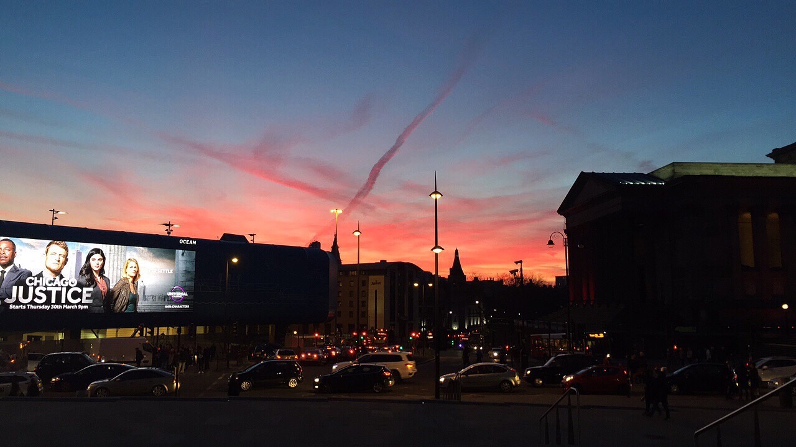
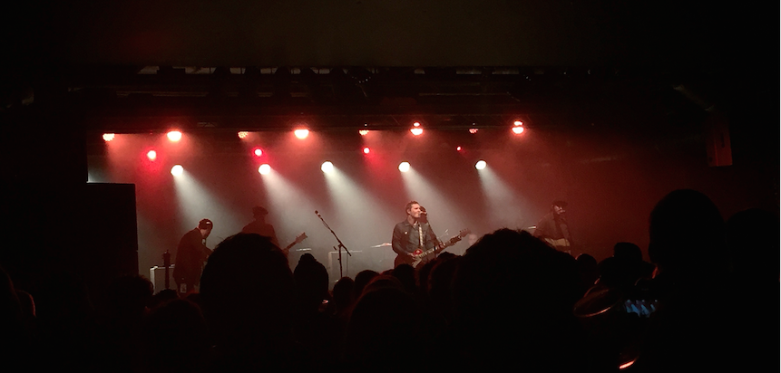

The sunset from Lime Street Station

The Courteeners at the Echo Arena

Albert Dock
The view from Radio City

Brian Fallon live at the o2 Academy

Sefton Park in the autumn
Below you will find a few suggestions of some of my personal favourite places to eat, hear some live music and go to for a stunning view. I hope you find them useful and if you have any you'd like to see featured on the site, leave a comment on the Contact Page.
A great place to go for an all day breakfast is Moose and Moonshine. If you're after a great pizza TriBeCa is your place, for a great price too. If you're anything like me you probably can't resist a good burger and you need to check out Free State Kitchen. What's even better is with an Independant Liverpool Card you can get discount here and at many other great indepedants around Liverpool!
Everyone knows Liverpool is famous for music so I won't even mention that band. It is however, important to know where to catch your favourite bands and artists. Personally, I love the variety of music you can catch at the o2 academy and the Guild of Students. Liverpool is also home to the Sound City Festival, celebrating it's 10th birthday this year!
There's nothing much better enjoying a beautiful day and ending it with a gorgeous sunset. Crosby beach is home to the 'iron men'. They are 100 iron sculptures by Antony Gormley along the beach looking out to sea. If you'd like to see a panoramic view of the city radio city head up Radio City tower and feast your eyes on the glory of Liverpool. (I do recommend saving this for a sunny, clear day.)
©2017 Guide To Liverpool